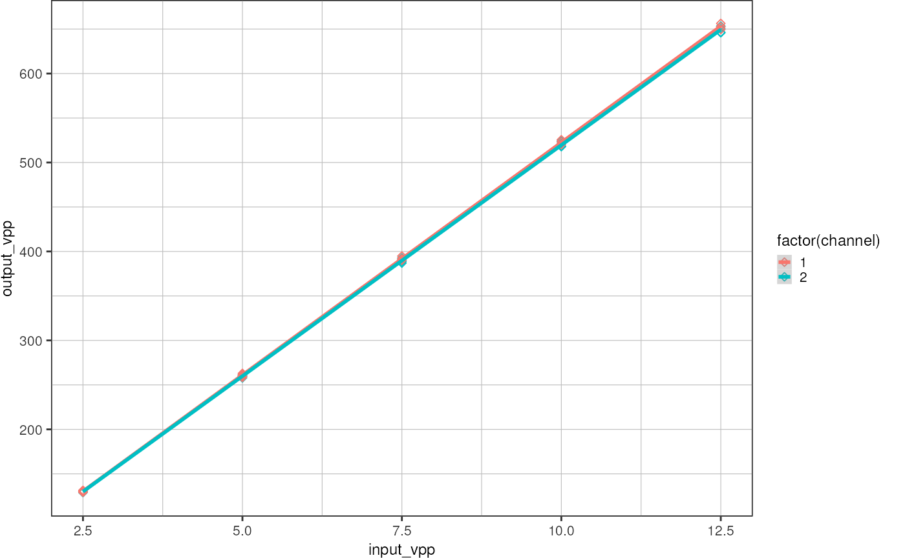

Electrical Engineering
electrical_engineering.RmdVoltage amplifier output measurement
Read in data:
d <- read_csv("data/boexle_sorter_output.csv", show_col_types = FALSE)
d
#> # A tibble: 40 × 5
#> channel frequency input_vpp output_vpp output_dc_average
#> <dbl> <dbl> <dbl> <dbl> <dbl>
#> 1 2 50 2.5 130. -0.13
#> 2 2 50 5 260. -0.08
#> 3 2 50 7.5 389. 0.21
#> 4 2 50 10 518. 0.33
#> 5 2 50 12.5 646. 0.35
#> 6 2 500 2.5 130. -0.22
#> 7 2 500 5 259. -0.18
#> 8 2 500 7.5 389. 0.12
#> 9 2 500 10 518. 0.23
#> 10 2 500 12.5 646. 0.21
#> # … with 30 more rowsPlot:
ggplot(d, aes(x = input_vpp, y = output_vpp, color = factor(channel))) +
geom_point(shape = 23) +
geom_smooth(method = "lm", formula = "y ~ x") +
theme_pretty()
It seems like variables frequency and channel do not contribute significantly to the output voltage, therefore I am just fitting a single line through all the data points assuming a linear dependency “output voltage ~ input voltage”.
p <- ggplot(d, aes(x = input_vpp, y = output_vpp)) +
geom_point(shape = 23) +
geom_smooth(method = "lm", formula = "y ~ x", fullrange = TRUE, color = "black", size = 1) +
xlim(c(0, 12.5)) +
labs(title = '"boexle sorter" output voltage as function of input voltage',
x = "Input voltage peak-to-peak",
y = "Output voltage peak-to-peak") +
theme_pretty()
pPrepare a plot that can be printed on A5:
p +
scale_y_continuous(breaks = seq(0, 700, 100), minor_breaks = seq(0, 700, 25)) +
scale_x_continuous(breaks = seq(0, 12, 2), minor_breaks = seq(0, 13), limits = c(0, 13))